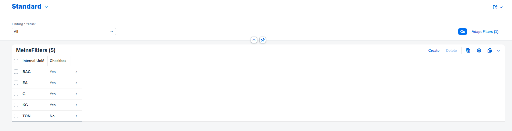
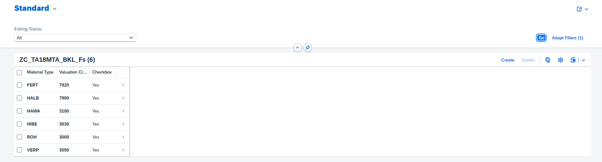
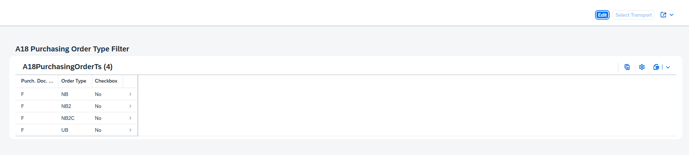
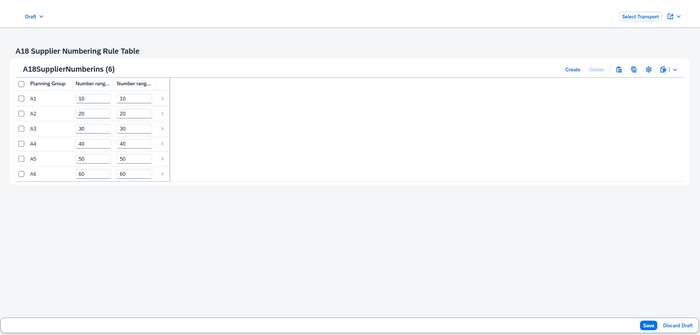
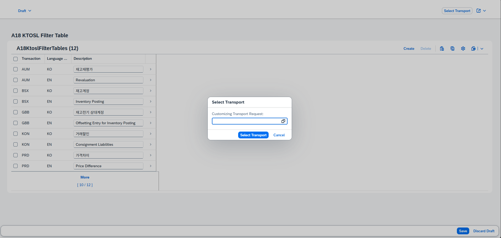

재무회계 · SAP FI
자격증 확인 ↗Financial Accounting
SAP S/4HANA의 재무회계 프로세스와 회계 업무 구성을 다루는 자격증입니다.

업무 요구를 이해하고,
코드와 화면으로 구현합니다.
CDS 데이터 모델부터 Draft, 입력 검증, 채번,
Fiori Elements까지. 자재와 구매 업무를 연결하며
구현한 RAP 애플리케이션을 소개합니다.
업무 영역
자재 · 구매 · 공급업체 · 회계
핵심 구현 사례
상태 제어 · 입력 검증 · 채번
구현 포인트
설계와 동작을 코드로 설명
SAP 재무·관리회계와 ABAP·Fiori 개발 역량을
공식 디지털 배지로 확인할 수 있습니다.
SAP S/4HANA의 재무회계 프로세스와 회계 업무 구성을 다루는 자격증입니다.
SAP S/4HANA의 원가 및 관리회계 프로세스와 업무 구성을 다루는 자격증입니다.
ABAP Cloud 환경에서 SAP 비즈니스 애플리케이션의 백엔드를 개발하는 기술을 다루는 자격증입니다.
SAP Fiori 애플리케이션의 사용자 인터페이스와 개발 기술을 다루는 자격증입니다.
 확대 ↗
확대 ↗자재·공급업체·구매정보·구매오더·계정·계정결정 기준을 각각의 업무 객체로 구성했습니다. 공통 구조를 재사용하면서도 검증 시점, 키 생성, 상태 제어는 업무에 맞게 구현했습니다.
다국어 텍스트와 종속 검색 도움말, 상태에 따른 수정 제어를 구현했습니다.
EINA / EINE부모·자식 모델에 입력 단계와 저장 단계의 수량 검증을 연결했습니다.
EKKO / EKPO헤더 업무 번호와 부모별 품목번호의 채번 책임을 나누었습니다.
VENDOR공급업체 그룹에 맞는 번호 범위를 설정 테이블에서 조회합니다.
SKA1계정과 언어별 텍스트를 모델링하고 사용 중지 Action을 정의했습니다.
OBYC이동유형별 계정결정 기준과 순번 생성 로직을 구성했습니다.
기본단위·자재유형/평가클래스·공급업체 그룹·문서유형 등 유지보수용 설정을 분리했습니다. 활성 필터를 사용하는 Value Help와 전송요청을 다루는 유지보수 패턴을 포함합니다.
프로그램별 조회·입력·검증·저장 화면입니다.
아래 프로그램을 선택하고 이미지를 눌러 확대해 보세요.
목록과 상태 전환부터 입력 검증, 저장 결과까지.
최소·최대 주문 수량 오류를 입력 단계에서 확인하고 수정합니다.
구매 문서와 품목을 연결하고, 저장된 문서 정보를 확인합니다.
공급업체 정보와 조정계정을 연결하는 화면입니다.
계정 유형과 언어별 계정명을 관리합니다.
이동유형·거래키·평가클래스와 계정을 연결합니다.
검색 도움말과 채번에 사용하는 업무 설정을 관리합니다.

화면 확대 ↗사용할 기본단위를 체크 상태로 관리합니다.

화면 확대 ↗자재 유형별 평가클래스 조합과 사용 여부를 관리합니다.

화면 확대 ↗NB, NB2, NB2C, UB 문서유형을 관리합니다.
 화면 확대 ↗
화면 확대 ↗공급업체 그룹의 한국어·영어 설명을 관리합니다.

화면 확대 ↗그룹별 내부·외부 번호 범위를 설정합니다.

화면 확대 ↗거래키 유지보수 화면에서 커스터마이징 전송요청을 선택합니다.
자재 마스터를 기준으로 읽는 구현 구조입니다. 영속 데이터와 Draft 데이터를 구분하고, CDS 관계를 Behavior와 서비스 노출까지 이어서 구성했습니다.
업무 데이터와 임시 편집 데이터를 각각 보관합니다.
zta18mara / zta18mara_d02Root와 텍스트 자식의 관계, 언어별 조회를 정의합니다.
zr_a18_mara / _MatnrDesc03생성·수정, 검증·채번·Action의 실행 시점을 정합니다.
zbp_r_a18_mara / EML04공개 필드, 검색 도움말과 UI Annotation을 구성합니다.
zc_a18_mara / Metadata05부모와 텍스트 엔티티를 서비스로 노출합니다.
ZUI_A18_MARA기술 키 MatUuid는 managed numbering으로 생성하고, 업무 번호 Matnr는 별도 채번 로직에서 생성합니다. 두 번호의 역할과 생성 방식을 구분했습니다.
부모 자재와 여러 언어의 텍스트를 하나의 업무 객체로 연결합니다.
define root view entity zr_a18_mara
as select from zi_a18_mara
composition [0..*] of ZI_A18_MARATEXT as _MatnrDesc
association [0..1] to ZI_A18_MARATEXT as _MatnrText on $projection.MatUuid = _MatnrText.MatUuid
and _MatnrText.Spras = $session.system_language
association [0..1] to zi_a18_matkl_t as _MatklText on $projection.Matkl = _MatklText.Matkl
and _MatklText.Spras = $session.system_language
association [0..1] to ZI_A18_WERKS_F4 as _WerksF4 on $projection.Werks = _WerksF4.Werks
and _WerksF4.Bukrs = 'K200'
association [0..1] to ZI_A18_LGORT_F4 as _LgortF4 on $projection.Lgort = _LgortF4.Lgort
and $projection.Werks = _LgortF4.Werks
association [0..1] to zi_a18_mtart_f4 as _MtartF4 on $projection.Mtart = _MtartF4.MaterialType
association [0..1] to zi_a18_bklas_f4 as _BklasF4 on $projection.Bklas = _BklasF4.Bklas
{업무 Action과 상태 표현을 Metadata Extension에 분리합니다.
annotate entity zc_a18_mara with
{
@UI: { lineItem: [{ position: 05, type: #FOR_ACTION, dataAction: 'inactivate', label: 'Activate / Inactivate' }],
hidden: true
}
Loekz;
@UI: { lineItem: [{ position: 03, importance: #HIGH, label: 'Status', criticality: 'StatusCriticality', criticalityRepresentation: #WITH_ICON }] }
Status;
@UI: { selectionField: [{ element: 'Mtart', position: 10 }],
lineItem: [{ position: 10, importance: #HIGH, label: 'Material Type' }],
textArrangement: #TEXT_FIRST
}
Mtart;부모 자재와 텍스트 Projection을 서비스의 공개 엔티티로 묶습니다.
@EndUserText.label: '[A18] 자재(부모) Service Definition'
define service Zui_a18_mara {
expose zc_a18_mara as Material;
expose ZC_A18_MARATEXT as MaterialDesc;
}마스터 데이터는 생성한 뒤에도 계속 사용됩니다. 잘못된 조합의 저장을 막고, 저장 후 고정해야 하는 필드와 비활성 자재의 편집 동작을 Behavior에서 제어했습니다.
Matfi가 설정된 자재는 주요 필드를 읽기 전용으로, Loekz가 설정된 자재는 Draft Edit를 비활성화합니다.
Behavior에서 instance features와 Draft를 선언하고, get_instance_features에서 엔티티 상태에 따라 기능 제어값을 반환합니다.
Value Help가 선택 범위를 좁히고, 저장 검증이 플랜트·저장위치 조합을 확인합니다. 활성·비활성 전환은 전용 Action으로 제공합니다.
저장 구조와 실행 시점을 Behavior Definition에서 연결합니다.
managed implementation in class zbp_r_a18_mara unique;
strict ( 2 );
with draft;
define behavior for zr_a18_mara alias Material
persistent table zta18mara
draft table zta18mara_d
lock master total etag LocChangedAt
authorization master ( instance )
etag master ChangedAt
{
create;
update ( features : instance );
association _MatnrDesc { create; with draft; }
field ( numbering : managed, readonly ) MatUuid;
field ( readonly ) Matnr;
field ( mandatory : create ) Matkl, Mtart, Bklas, Werks, Lgort;
field ( features : instance ) Waers, Werks, Lgort, Mtart, Bklas, Ersda, Matkl;
determination set_default_value on modify { create; }
determination realtime_message on modify { create; update; }
determination set_matnr on save { create; }
determination set_matfi on save { create; }
validation check_mandatory on save { create; update; }
validation check_duplicate on save { create; }
validation check_werks_lgort on save { create; update; }
validation check_mtart_bklas on save { create; update; }
validation check_value on save { create; update; }
validation check_child on save { create; update; }
action inactivate result [1] $self;
draft action ( features : instance ) Edit;
draft determine action Prepare
{
validation ( always ) check_child;
validation MaterialDesc~check_mandatory_c;
}
draft action Activate optimized;
draft action Discard;
draft action Resume;인스턴스 상태에 따라 허용하는 작업과 필드가 달라집니다.
METHOD get_instance_features.
DATA : ls_result LIKE LINE OF result.
READ ENTITIES OF zr_a18_mara IN LOCAL MODE
ENTITY Material
ALL FIELDS
WITH CORRESPONDING #( keys )
RESULT DATA(result_data)
FAILED DATA(failed_data)
REPORTED DATA(reported_data).
LOOP AT keys INTO DATA(key).
READ TABLE result_data INTO DATA(ls_result_data) WITH KEY id COMPONENTS %tky = key-%tky.
IF sy-subrc <> 0.
CONTINUE.
ENDIF.
ls_result-%tky = key-%tky.
ls_result-%features-%field-Waers = if_abap_behv=>fc-f-read_only.
IF ls_result_data-Matfi = 'X'.
ls_result-%features-%field-Bklas = if_abap_behv=>fc-f-read_only.
ls_result-%features-%field-Ersda = if_abap_behv=>fc-f-read_only.
ls_result-%features-%field-Lgort = if_abap_behv=>fc-f-read_only.
ls_result-%features-%field-Mtart = if_abap_behv=>fc-f-read_only.
ls_result-%features-%field-Werks = if_abap_behv=>fc-f-read_only.
ls_result-%features-%field-Matkl = if_abap_behv=>fc-f-read_only.
ELSEIF ls_result_data-Matfi = space.
ls_result-%features-%field-Bklas = if_abap_behv=>fc-f-unrestricted.
ls_result-%features-%field-Ersda = if_abap_behv=>fc-f-unrestricted.
ls_result-%features-%field-Lgort = if_abap_behv=>fc-f-unrestricted.
ls_result-%features-%field-Mtart = if_abap_behv=>fc-f-unrestricted.
ls_result-%features-%field-Werks = if_abap_behv=>fc-f-unrestricted.
ls_result-%features-%field-Matkl = if_abap_behv=>fc-f-unrestricted.
ENDIF.
IF ls_result_data-Loekz = 'X'.
ls_result-%action-Edit = if_abap_behv=>fc-o-disabled.
ELSE.
ls_result-%action-Edit = if_abap_behv=>fc-o-enabled.
ENDIF.
APPEND ls_result TO result.
CLEAR ls_result.
ENDLOOP.
ENDMETHOD.Projection의 additionalBinding은 선택한 플랜트에 맞는 저장위치 검색을 구성합니다. check_werks_lgort는 EML로 읽은 값과 허용 조합을 비교하고, 오류가 있으면 failed와 reported에 해당 인스턴스·필드를 반환합니다.
허용하지 않는 조합을 저장 단계에서 차단하고 오류 필드를 지정합니다.
METHOD check_werks_lgort.
DATA ls_reported LIKE LINE OF reported-material.
CLEAR ls_reported.
READ ENTITIES OF zr_a18_mara IN LOCAL MODE
ENTITY Material
FIELDS ( Werks Lgort )
WITH CORRESPONDING #( keys )
RESULT DATA(read_result)
FAILED DATA(read_failed)
REPORTED DATA(read_reported).
CHECK read_result IS NOT INITIAL.
SELECT werks, lgort
FROM zi_a18_lgort_f4
FOR ALL ENTRIES IN @read_result
WHERE werks = @read_result-Werks
AND lgort = @read_result-Lgort
INTO TABLE @DATA(lt_werks).
LOOP AT read_result INTO DATA(ls_read_result).
IF NOT line_exists( lt_werks[ werks = ls_read_result-Werks
lgort = ls_read_result-Lgort ] ).
APPEND VALUE #( %tky = ls_read_result-%tky
%state_area = 'VALIDATE_WERKS'
) TO reported-material.
ls_reported-%element-werks = if_abap_behv=>mk-on.
ls_reported-%element-lgort = if_abap_behv=>mk-on.
APPEND VALUE #( %tky = ls_read_result-%tky ) TO failed-material.
APPEND VALUE #( %tky = ls_read_result-%tky
%state_area = 'VALIDATE_WERKS'
%msg = new_message(
id = 'ZMCA18_PRO'
number = '007'
v1 = ls_read_result-Werks
v2 = ls_read_result-Lgort
severity = if_abap_behv_message=>severity-error
)
%element = ls_reported-%element
) TO reported-material.
CLEAR ls_reported.
ENDIF.
ENDLOOP.
ENDMETHOD.Mtart 값을 평가클래스 검색 조건과 결과 바인딩에 연결합니다.
@ObjectModel.text.element: [ 'BklasText' ]
@Consumption.valueHelpDefinition: [{
entity: {
name: 'ZI_A18_BKLAS_F4',
element: 'Bklas'
},
additionalBinding: [{
localElement: 'Mtart',
element: 'Mtart',
usage: #FILTER_AND_RESULT
}]
}]
Bklas,필터 테이블의 활성 상태를 Value Help 조회 조건으로 사용합니다.
define view entity zi_a18_meins_f4
as select from t006 as Meins
inner join zta18meins_f as MeinsFilter on Meins.msehi = MeinsFilter.msehi
and MeinsFilter.active = 'X'
left outer join t006a as MeinsText on Meins.msehi = MeinsText.msehi
and MeinsText.spras = $session.system_language
{
@ObjectModel.text.element: [ 'Msehl' ]
key Meins.msehi as Msehi,
@Semantics.text: true
MeinsText.msehl as Msehl
}기술 키 MatUuid와 업무 번호 Matnr의 생성 책임을 분리합니다.
METHOD set_matnr.
READ ENTITIES OF zr_a18_mara IN LOCAL MODE
ENTITY Material
FIELDS ( mtart matnr )
WITH CORRESPONDING #( keys )
RESULT DATA(read_result).
CHECK read_result IS NOT INITIAL.
LOOP AT read_result ASSIGNING FIELD-SYMBOL(<fs_read_result>).
IF <fs_read_result>-matnr IS NOT INITIAL OR <fs_read_result>-Mtart IS INITIAL.
CONTINUE.
ENDIF.
TRY.
zcl_a18_numbering=>prefix_numbering(
EXPORTING
iv_nr_object = 'ZA18_MATNR'
iv_nr_range = '10'
iv_subobject = CONV #( <fs_read_result>-Mtart )
IMPORTING
ev_number = DATA(lv_number)
).
MODIFY ENTITIES OF zr_a18_mara IN LOCAL MODE
ENTITY Material
UPDATE FIELDS ( Matnr )
WITH VALUE #( ( %tky = <fs_read_result>-%tky
Matnr = lv_number )
).
CATCH cx_number_ranges INTO DATA(lx_error).
APPEND VALUE #( %tky = <fs_read_result>-%tky
%msg = new_message(
id = 'ZMCA18_PRO'
number = '009'
severity = if_abap_behv_message=>severity-error
)
) TO reported-material.
ENDTRY.
ENDLOOP.
ENDMETHOD.레코드를 유지하면서 사용 상태를 전환하는 Action 구현입니다.
METHOD inactivate.
DATA lt_update TYPE TABLE FOR UPDATE zr_a18_mara.
CLEAR lt_update.
READ ENTITIES OF zr_a18_mara IN LOCAL MODE
ENTITY Material
FIELDS ( Loekz )
WITH CORRESPONDING #( keys )
RESULT DATA(read_result).
LOOP AT read_result INTO DATA(ls_read_result).
READ TABLE keys INTO DATA(key) WITH KEY %tky = ls_read_result-%tky.
CHECK sy-subrc = 0.
CASE ls_read_result-Loekz.
WHEN space.
ls_read_result-Loekz = 'X'.
WHEN 'X'.
ls_read_result-Loekz = space.
ENDCASE.
APPEND VALUE #( %tky = ls_read_result-%tky
loekz = ls_read_result-Loekz
) TO lt_update.
ENDLOOP.
MODIFY ENTITIES OF zr_a18_mara IN LOCAL MODE
ENTITY Material
UPDATE FIELDS ( Loekz )
WITH lt_update.
READ ENTITIES OF zr_a18_mara IN LOCAL MODE
ENTITY Material
ALL FIELDS
WITH CORRESPONDING #( keys )
RESULT DATA(updated_result).
result = VALUE #(
FOR updated IN updated_result
(
%tky = updated-%tky
%param = updated
)
).
ENDMETHOD.구매정보 품목의 최소·최대 주문 수량은 입력 순서의 영향을 받습니다. 부분 UPDATE의 요청값을 현재 값과 합쳐 비교하고, 저장 시 전체 값을 다시 검증하도록 구현했습니다.
precheck_update에서 %control로 변경 필드를 식별합니다. 두 수량이 모두 입력된 경우에만 최소 > 최대 조합의 UPDATE를 거부합니다.
check_values에서 수량 관계와 음수 값을 재검증합니다. UPDATE Precheck를 거치지 않는 CREATE도 저장 시 검증 대상에 포함합니다.
Precheck는 실패한 요청의 메시지를 반환하고, 저장 검증은 기존 state message를 초기화한 뒤 %path와 %element로 자식의 오류 필드를 연결합니다.
생략된 필드를 0으로 간주하지 않고 현재 엔티티 값으로 보완합니다.
METHOD precheck_update.
DATA : ls_reported LIKE LINE OF reported-purchaseinfochild.
CLEAR ls_reported.
READ ENTITIES OF zr_a18_eina IN LOCAL MODE
ENTITY PurchaseInfoChild
ALL FIELDS WITH VALUE #( FOR entity IN entities (
%tky = entity-%tky
) )
RESULT DATA(read_result).
LOOP AT entities INTO DATA(ls_entity).
DATA(lv_failed) = abap_false.
IF ls_entity-%control-Minbm <> if_abap_behv=>mk-on
AND ls_entity-%control-Bstma <> if_abap_behv=>mk-on
AND ls_entity-%control-Netpr <> if_abap_behv=>mk-on.
CONTINUE.
ENDIF.
READ TABLE read_result INTO DATA(ls_read_result) WITH KEY %tky = ls_entity-%tky.
IF sy-subrc <> 0.
CONTINUE.
ENDIF.
DATA(lv_bstma) = ls_read_result-Bstma.
DATA(lv_minbm) = ls_read_result-Minbm.
DATA(lv_netpr) = ls_read_result-Netpr.
IF ls_entity-%control-Bstma = if_abap_behv=>mk-on.
lv_bstma = ls_entity-Bstma.
ENDIF.
IF ls_entity-%control-Minbm = if_abap_behv=>mk-on.
lv_minbm = ls_entity-Minbm.
ENDIF.
IF ls_entity-%control-Netpr = if_abap_behv=>mk-on.
lv_netpr = ls_entity-Netpr.
ENDIF.
IF ( ls_entity-%control-Minbm = if_abap_behv=>mk-on
OR ls_entity-%control-Bstma = if_abap_behv=>mk-on )
AND lv_minbm IS NOT INITIAL
AND lv_bstma IS NOT INITIAL
AND lv_minbm > lv_bstma.
lv_failed = abap_true.
APPEND VALUE #(
%tky = ls_read_result-%tky
%op-%update = if_abap_behv=>mk-on
%path = VALUE #(
PurchaseInfoParent-%is_draft = ls_read_result-%is_draft
PurchaseInfoParent-InfUuid = ls_read_result-%key-InfUuid )
%msg = new_message(
id = 'ZMCA18_PRO'
number = '021'
severity = if_abap_behv_message=>severity-error
v1 = 'Maximum Order Quantity'
v2 = 'Minimum Qty' )
%element-Bstma = if_abap_behv=>mk-on
%element-Minbm = if_abap_behv=>mk-on )
TO reported-purchaseinfochild.
ENDIF.입력 단계와 저장 단계의 메시지 역할을 구분합니다.
APPEND VALUE #( %tky = ls_read_result-%tky
%state_area = 'Quantity_Error' )
TO reported-purchaseinfochild.
APPEND VALUE #( %tky = ls_read_result-%tky
%state_area = 'Quantity_Error2' )
TO reported-purchaseinfochild.
APPEND VALUE #( %tky = ls_read_result-%tky
%state_area = 'Currency_Error' )
TO reported-purchaseinfochild.
DATA(lv_failed) = abap_false.
IF ls_read_result-Minbm > ls_read_result-Bstma.
lv_failed = abap_true.
APPEND VALUE #(
%tky = ls_read_result-%tky
%path = VALUE #(
PurchaseInfoParent-%is_draft = ls_read_result-%is_draft
PurchaseInfoParent-InfUuid = ls_read_result-%key-InfUuid )
%state_area = 'Quantity_Error'
%msg = new_message(
id = 'ZMCA18_PRO'
number = '021'
severity = if_abap_behv_message=>severity-error
v1 = 'Maximum Order Quantity'
v2 = 'Minimum Qty' )
%element-Bstma = if_abap_behv=>mk-on
%element-Minbm = if_abap_behv=>mk-on )
TO reported-purchaseinfochild.
ENDIF.
IF ls_read_result-Bstma < 0 OR ls_read_result-Minbm < 0.
lv_failed = abap_true.
APPEND VALUE #(
%tky = ls_read_result-%tky
%path = VALUE #(
PurchaseInfoParent-%is_draft = ls_read_result-%is_draft
PurchaseInfoParent-InfUuid = ls_read_result-%key-InfUuid )
%state_area = 'Quantity_Error2'
%msg = new_message(
id = 'ZMCA18_PRO'
number = '017'
severity = if_abap_behv_message=>severity-error )
%element-Bstma = COND #( WHEN ls_read_result-Bstma < 0
THEN if_abap_behv=>mk-on )
%element-Minbm = COND #( WHEN ls_read_result-Minbm < 0
THEN if_abap_behv=>mk-on ) )
TO reported-purchaseinfochild.
ENDIF.
IF ls_read_result-Netpr < 0.
lv_failed = abap_true.
APPEND VALUE #(
%tky = ls_read_result-%tky
%path = VALUE #(
PurchaseInfoParent-%is_draft = ls_read_result-%is_draft
PurchaseInfoParent-InfUuid = ls_read_result-%key-InfUuid )
%state_area = 'Currency_Error'
%msg = new_message(
id = 'ZMCA18_PRO'
number = '005'
severity = if_abap_behv_message=>severity-error )
%element-Netpr = if_abap_behv=>mk-on )
TO reported-purchaseinfochild.
ENDIF.
IF lv_failed = abap_true.
APPEND VALUE #( %tky = ls_read_result-%tky )
TO failed-purchaseinfochild.
ENDIF.
ENDLOOP.
ENDMETHOD.두 값이 채워진 상태에서 최소 수량이 더 크면 실패 처리합니다. 최대 수량을 20으로 수정하면 수량 관계 조건을 통과하며, 저장 검증에서는 이전 상태 메시지를 먼저 초기화합니다. 입력 단계의 피드백과 저장 단계의 데이터 검증을 연결한 구조입니다.
부분 수정 검증과 CREATE / SAVE 검증의 실행 지점을 선언합니다.
define behavior for ZI_A18_EINE alias PurchaseInfoChild
persistent table zta18eine
draft table zta18eine_d
lock dependent by _Eina
authorization dependent by _Eina
{
update ( precheck );
delete;
field ( readonly : update ) werks;
field ( readonly ) InfUuid, WerksName;
field ( mandatory ) Netpr, Bstma, Minbm;
field ( features : instance ) Waers, Meins;
association _Eina { with draft; }
determination set_werksname on modify { field werks; }
determination set_default_value on modify { create; }
determination set_defaults on modify { create; }
validation check_values on save { create; update; }메시지 갱신 대상을 projection behavior에도 연결합니다.
side effects
{
field Meins affects messages;
field Lifnr affects messages;
field Matnr affects messages;
}구매오더 품목은 부모별로 구분되는 업무 번호가 필요합니다. 기존 품목의 최댓값을 기준으로 10씩 증가시키고, 새로 배정한 번호를 즉시 작업 목록에 반영했습니다.
헤더는 문서유형별 Number Range를 선택합니다. 품목은 부모 EbelnUuid에 속한 기존 Ebelp를 기준으로 순번을 만듭니다.
부모와 %target을 순회하며 MAX + 10을 계산합니다. 새 번호를 read_result에 APPEND하여 동일 요청 안의 다음 품목 계산에 포함합니다.
mapped-purchaseitem에 %cid, %is_draft, EbelnUuid, Ebelp를 반환해 생성 요청과 결과 키를 연결합니다.
같은 요청에서 추가되는 여러 품목도 서로 다른 번호를 받도록 목록을 갱신합니다.
METHOD earlynumbering_cba_Ekpo.
DATA : lv_new_ebelp TYPE zea18ebelp.
READ ENTITIES OF zr_a18_ekko IN LOCAL MODE
ENTITY PurchaseHeader BY \_Ekpo
FIELDS ( Ebelp )
WITH CORRESPONDING #( entities )
RESULT DATA(read_result).
LOOP AT entities INTO DATA(ls_parent).
LOOP AT ls_parent-%target INTO DATA(ls_target).
IF ls_target-Ebelp IS INITIAL.
DATA(lv_max_ebelp) = REDUCE zea18ebelp(
INIT Max = 0
FOR ls_read_result IN read_result USING KEY entity
WHERE ( EbelnUuid = ls_parent-EbelnUuid )
NEXT Max = COND #(
WHEN ls_read_result-Ebelp > Max
THEN ls_read_result-Ebelp
ELSE Max
)
).
lv_new_ebelp = lv_max_ebelp + 10.
APPEND VALUE #( EbelnUuid = ls_parent-EbelnUuid
Ebelp = lv_new_ebelp
) TO read_result.
ELSE.
lv_new_ebelp = ls_target-Ebelp.
ENDIF.
APPEND VALUE #( %cid = ls_target-%cid
%is_draft = ls_target-%is_draft
EbelnUuid = ls_parent-EbelnUuid
Ebelp = lv_new_ebelp
) TO mapped-purchaseitem.
ENDLOOP.
ENDLOOP.
ENDMETHOD.문서 유형을 번호 범위에 매핑하고 공통 채번 클래스를 호출합니다.
CASE lv_bsart.
WHEN 'NB'.
lv_numberrange = '45'.
WHEN 'NB2'.
lv_numberrange = '49'.
WHEN 'NB2C'.
lv_numberrange = '50'.
WHEN 'UB'.
lv_numberrange = '41'.
ENDCASE.
zcl_a18_numbering=>lifnr_numebring(
EXPORTING
iv_nr_object = 'ZA18EBELN'
iv_nr_range = lv_numberrange
IMPORTING
ev_number = DATA(lv_ebeln)
).
APPEND VALUE #( %tky = ls_read_result-%tky
ebeln = lv_ebeln
) TO lt_update.새 번호를 작업 목록에 누적하는 코드의 계산 예시입니다. 병렬 요청 간 동시성 보장은 별도의 검증 대상입니다.
Number Range 호출과 번호 포맷을 재사용 가능한 클래스로 분리합니다.
METHOD prefix_numbering.
TRY.
cl_numberrange_runtime=>number_get(
EXPORTING
nr_range_nr = iv_nr_range
object = iv_nr_object
subobject = iv_subobject
quantity = CONV #( iv_quantity )
IMPORTING
number = DATA(lv_single_number)
returncode = DATA(lv_returncode)
).
DATA(lv_orgn) = condense( val = lv_single_number ).
DATA(lv_prefix_len) = strlen( iv_subobject ).
DATA(lv_num_len) = 10 - lv_prefix_len.
ev_number = iv_subobject && substring( val = lv_orgn
off = strlen( lv_orgn ) - lv_num_len
len = lv_num_len
).
CATCH cx_nr_object_not_found INTO DATA(lx_error).
RAISE EXCEPTION lx_error.
CATCH cx_number_ranges INTO DATA(lx_nr_error).
ENDTRY.
ENDMETHOD.핵심 사례 외에도 공급업체 그룹별 채번, 계정 사용 중지, 계정결정 기준의 키 생성, 필터 유지보수에 RAP 패턴을 적용했습니다.
zta18lfa1_num에서 공급업체 그룹 Fdgrv에 해당하는 int_nr를 읽어 채번 클래스로 전달합니다. 규칙을 설정 데이터로 분리한 부분을 중심으로 소개합니다.
그룹별 번호 범위를 설정 테이블에서 조회하는 구현입니다.
SELECT SINGLE int_nr
FROM zta18lfa1_num
WHERE fdgrv = @ls_read_result-Fdgrv
INTO @DATA(lv_number).
IF sy-subrc = 0.
TRY.
zcl_a18_numbering=>lifnr_numebring(
EXPORTING
iv_nr_object = 'ZNR_A18_LI'
iv_nr_range = lv_number
IMPORTING
ev_number = DATA(lv_new_lifnr)
).
APPEND VALUE #( %tky = ls_read_result-%tky
%control-Lifnr = if_abap_behv=>mk-on
Lifnr = lv_new_lifnr
) TO lt_update.set_stop_account에서 선택한 계정의 Loekz를 갱신하고 EML로 다시 읽은 결과를 반환합니다. 업무 동작을 Action으로 모델링한 사례입니다.
선택한 계정의 상태 변경을 명시적 업무 Action으로 제공합니다.
METHOD set_stop_account.
MODIFY ENTITIES OF zr_a18_ska1 IN LOCAL MODE
ENTITY SaknrHeader
UPDATE FIELDS ( Loekz )
WITH VALUE #(
FOR key IN keys (
%tky = key-%tky
Loekz = 'X'
)
).
READ ENTITIES OF zr_a18_ska1 IN LOCAL MODE
ENTITY SaknrHeader
ALL FIELDS
WITH CORRESPONDING #( keys )
RESULT DATA(read_result).
result = VALUE #( FOR ls_read_result IN read_result
( %tky = ls_read_result-%tky
%param = ls_read_result
)
).
ENDMETHOD.이동유형 Bwart별 SEQNR 최댓값 + 1을 계산해 mapped에 반환합니다. 현재는 DB MAX 기반 구현이며 동시 생성 대응은 추가 검증 항목입니다.
복합 업무 키의 순번을 생성 시점에 매핑하는 구현입니다.
METHOD earlynumbering_create.
LOOP AT entities INTO DATA(ls_entity).
SELECT SINGLE FROM zta18t030
FIELDS MAX( seqnr )
WHERE bwart = @ls_entity-Bwart
INTO @DATA(lv_max_seqnr).
IF sy-subrc <> 0.
EXIT.
ENDIF.
DATA(lv_seqnr) = lv_max_seqnr + 1.
APPEND VALUE #( %cid = ls_entity-%cid
bwart = ls_entity-Bwart
seqnr = lv_seqnr
) TO mapped-obyc.
ENDLOOP.
ENDMETHOD.생성된 유지보수 코드에는 Draft, singleton 부모, 전송요청 선택 및 검증이 연결되어 있습니다. 생성된 기본 구조와 직접 작성한 업무 로직을 구분해 설명합니다.
생성된 유지보수 패턴에서 Draft와 커스터마이징 전송요청이 연결되는 구조입니다.
managed with additional save implementation in class ZBP_I_A18KTOSLFILTERTABLE_S unique;
strict;
with draft;
define behavior for ZI_A18KtoslFilterTable_S alias A18KtoslFilterTaAll
draft table ZTA18KTOSL_F_D_S
with unmanaged save
lock master total etag LastChangedAtMax
authorization master( global )
{
field ( readonly )
SingletonID;
update;
internal create;
internal delete;
draft action ( features : instance ) Edit;
draft action Activate optimized;
draft action Discard;
draft action Resume;
draft determine action Prepare;
action ( features : instance ) SelectCustomizingTransptReq parameter D_SelectCustomizingTransptReqP result [1] $self;
association _A18KtoslFilterTable { create ( features : instance ); with draft; }
}각 항목은 앞서 소개한 구현 상세로 바로 연결됩니다. 선언의 위치와 실행 흐름을 함께 설명하는 데 초점을 맞췄습니다.
| 역량 | 구현으로 설명할 내용 | 구현 상세 |
|---|---|---|
| CDS 모델링 | Root / Composition / Projection을 연결하고 언어별 텍스트를 조회합니다. | 자재·언어별 텍스트의 Composition |
| 트랜잭션과 Draft | 영속·Draft 테이블, lock / etag, Prepare와 저장 동작을 선언합니다. | Draft와 저장 시점의 책임 |
| 동적 기능 제어 | 인스턴스 상태에 따라 필드와 Draft Edit 동작을 제어합니다. | 상태에 따른 필드·Edit 제어 |
| 입력·저장 검증 | Precheck의 부분 요청과 저장 시 전체 값 검증을 분리합니다. | 부분 UPDATE에서 최종 비교값 구성 · 저장 시 재검증과 상태 메시지 초기화 |
| EML과 키 매핑 | READ / MODIFY ENTITIES, %tky, %cid, mapped를 목적에 맞게 사용합니다. | 자재번호 생성과 EML 반영 · 부모별 품목번호 Early Numbering |
| 검색 도움말 | additionalBinding과 활성 필터 JOIN으로 선택 범위를 구성합니다. | 종속 Value Help · 사용 가능한 기본단위만 조회 |
| 메시지와 화면 연결 | %path / %state_area / %element, Side Effects로 피드백을 연결합니다. | 저장 시 재검증과 상태 메시지 초기화 · 입력 변경 시 메시지 갱신 선언 |
| Fiori Elements 구성 | Metadata Extension의 Action·목록·상태 표시와 Service Definition을 구성합니다. | UI Annotation으로 목록과 Action 구성 · Projection 엔티티의 서비스 노출 |
데이터 관계는 CDS로, 업무 규칙은 Behavior로, 사용자 피드백은 메시지와 UI Annotation으로 연결했습니다. 입력과 저장의 실행 시점, 기술 키와 업무 번호, 부모와 자식의 책임을 구분하며 RAP 애플리케이션을 구성했습니다.